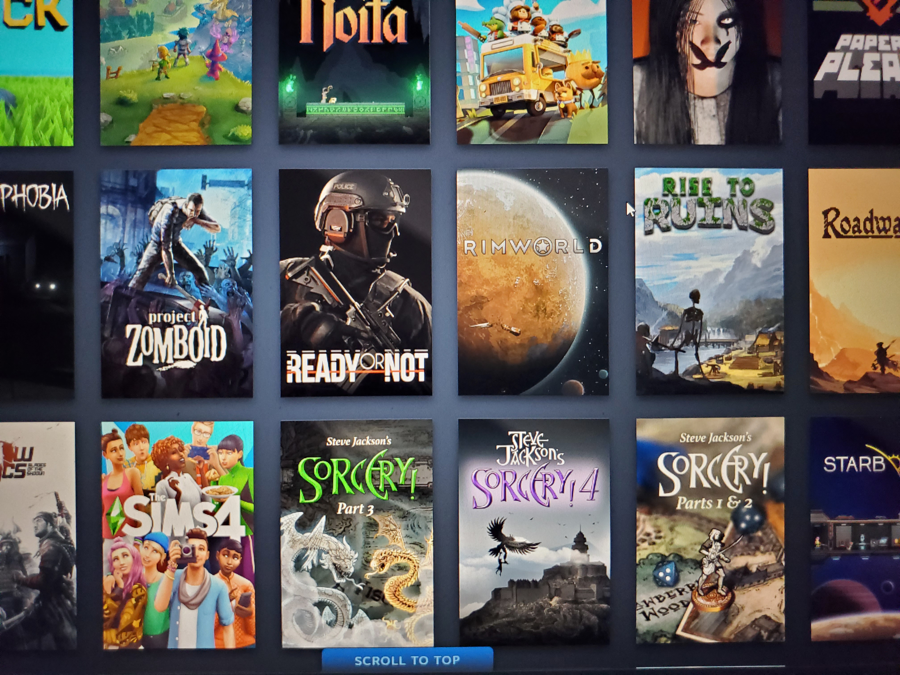
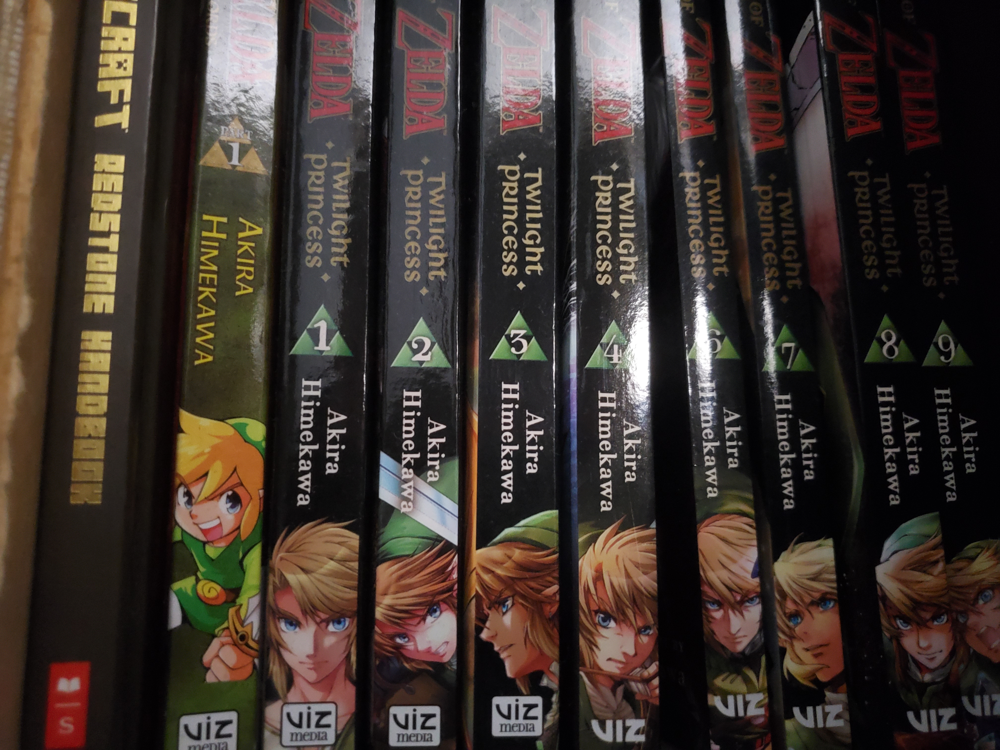
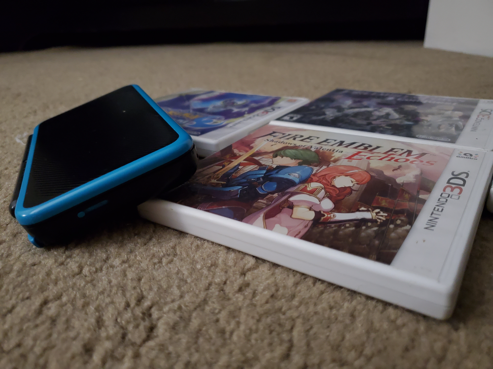
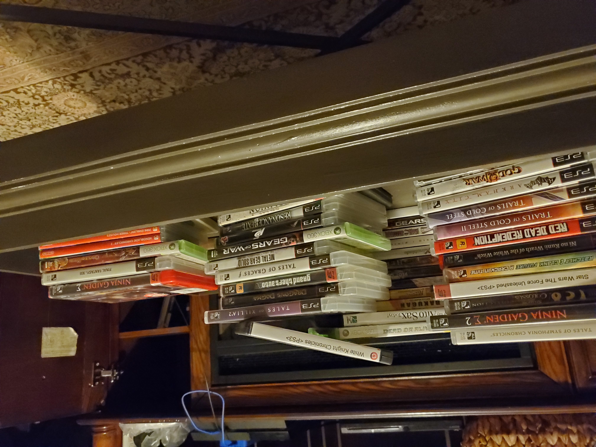
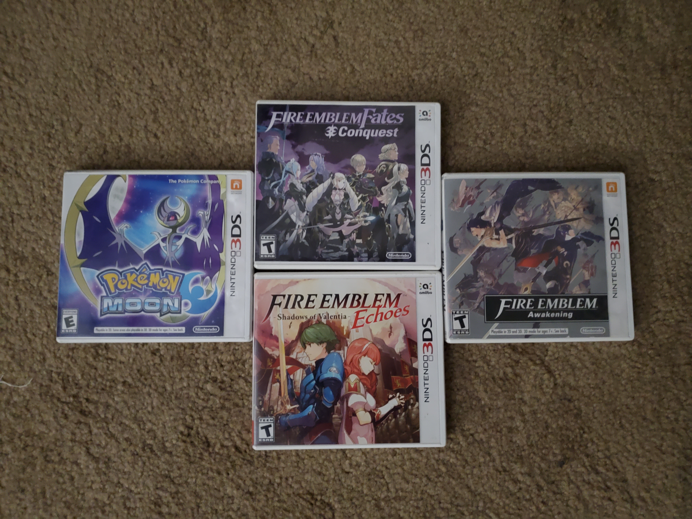

My Steam Library

More of my Steam Library

Books of TLOZ Game
Hi! This site is all about me talking about my deep love for games! It goes from video games, tabletop games and even card games! And I even talk about some games that I personally love so much that I can remember story beats and specific game mechanics that I love a lot!
Go ahead and take a look around and look at the other pages for some more specific information about why I love gaming and some of the games mentioned! Additionally, if you can, please fill out some of the fields and take a look at the tables! I would like to see if you share similar interests and love games as much as I do!
About Me
Hi! I am Kei Vang! And I have loved playing games for a long time ever since I was young! I grew up with many family members playing them. I distinctly remember a game on the Nintendo 64 which was the first Super Smash Bros that I played as a child, which led me down a path of loving how games are!
I love how they give entertainment and how we can use them as an art form to display a unique experience that only games can give us! I've also played so many different games up until now where I remember when we first got the first PS3 ever and played with old consoles like the N64, the PS2, the very first Nintendo DS, the old Gameboys and more!

My DS on Games
My Favorite Genres
I've played many games during my life. While I have many favorite genres of games that I enjoy like strategy games like Fire Emblem or action games like Ninja Gaiden, I always loved playing RPG's. It doesn't matter if it was a western RPG like Dragon's Dogma, Fallout, Skyrim or a japanese RPG like the Tales of series, Dragon Quest, or Final Fantasy. I am always drawn towards games that allows me to do things my way or to watch a story unfold before me.
Genre
Ranking
RPGs
1
Strategy
2
Action
3
Management
4
Rougelike
5
Visual Novel
6

My collection of games
When were my Best Times Playing Games
I always had a blast playing games on my own and experiencing how a game was meant to be played. Awesome stories, great characters, and morals that are either good or questionable based on the overarching message of the game.
But, even though I love playing single player games that have deep and meaningful messages, I will always love playing with friends, family, and strangers in video games as it is always a treat to experience something enjoyable with them and create memories when we can't be together in that moment.
My PS3 Controllers
Where I First Discovered Games
I was a very small child when I first saw my Dad play an MMORPG called Two Moons. He was playing with his cousins and brothers at the time but he let me watch him play and it was so cool watching the cool animations for its time on the small desktop screen we had at home. Soon after, I played my very first game of The Incredible Hulk which was on the first XBox and just ran around helping people and breaking tanks. After this, I played some more games like Burnout 2, Crash Bandicoot, Conker: Live and Reloaded, and Halo 2 which only spurred my love even more!

My DS Games
How I Choose my Games
I choose my games based on if it meets the critera of having a story. It doesn't even need to be a good story, just a way for me to understand characters or the world that the creators made for their game. After that, then comes gameplay and how fun it is to understand and mold a certain playstyle that I like to undertake depending on what I want to do.
A game that made me like stories like these is an indie game called Undertale. Such a good message about choosing what to do and thinking about your actions as you befriend odd creatures and has a good story despite being a small game. With an alternate route being a story of tragedy as you cut through monsters that you knew before and being humbled by the game as the difficulty of the game spikes at certain parts as you play the villian.
My drawing of an Undertale character
Why I Continued to Love Gaming
I've loved games for a long, long time. Where each and every game brings a uniqueness to the hobby. Whether it be a grand story having multiple games dedicated to that story or having such a good gameplay loop where it's so fine tuned, it never gets boring or even a simple game that has a good message behind it!
A game that I distinctly remember that has a good moral behind it combined with good gameplay was the game Celeste. To always believe in yourself despite the literal challenge of the mountain in the game, and the metaphorical mountain that you must overcome in your mind. That is what drives me to continue to love games and so long as games have good stories, with a tragic story with real consequences or a feel-good story that makes you feel warm and fuzzy on the inside.
My PS3
AI-Prompts
This is a table listing out the prompts used and what AI was used to generate.
Prompt
AI
Make a valid HTML 5 webpage of 7 sample pages with each page being a section with a page name h2 within after the colors of the rainbow and a navbar that when clicked hides all the other pages.
ChatGPT
Change the divs to sections.
ChatGPT
Add in a footer with copyright.
ChatGPT
Can you make it so that the navigation bar is always evenly spaced out with the tags listed?
ChatGPT
for this small section, can you make a table? have it separated by blocks with some titles that lists out my favorite genres from lowest to highest.
ChatGPT
can you make this section a small slide show with images adjusted to be small?for the slideshow, can you enlarge the images slightly?
ChatGPT
give me a good text color that contrasts with this background color in html. rgb(121, 105, 105)
ChatGPT
can you make the pages all the same color with one single thing that calls it
ChatGPT
can you make a gradient color with the existing colors? do not change anything else about the code, and only show me the parts you adjusted.
ChatGPT
generate me a form in html that takes in information about the users first time experiencing games with options that say video games, tabletop, card games, none or other.
ChatGPT
can you correct this with the correct code needed? do not change the code unless needed to correct the code. Warning: Inline script [ onclick="showPage('page1')" ] cannot be used.
ChatGPT
Inline script [ onclick="showPage('page1')" ] cannot be used. fix this.